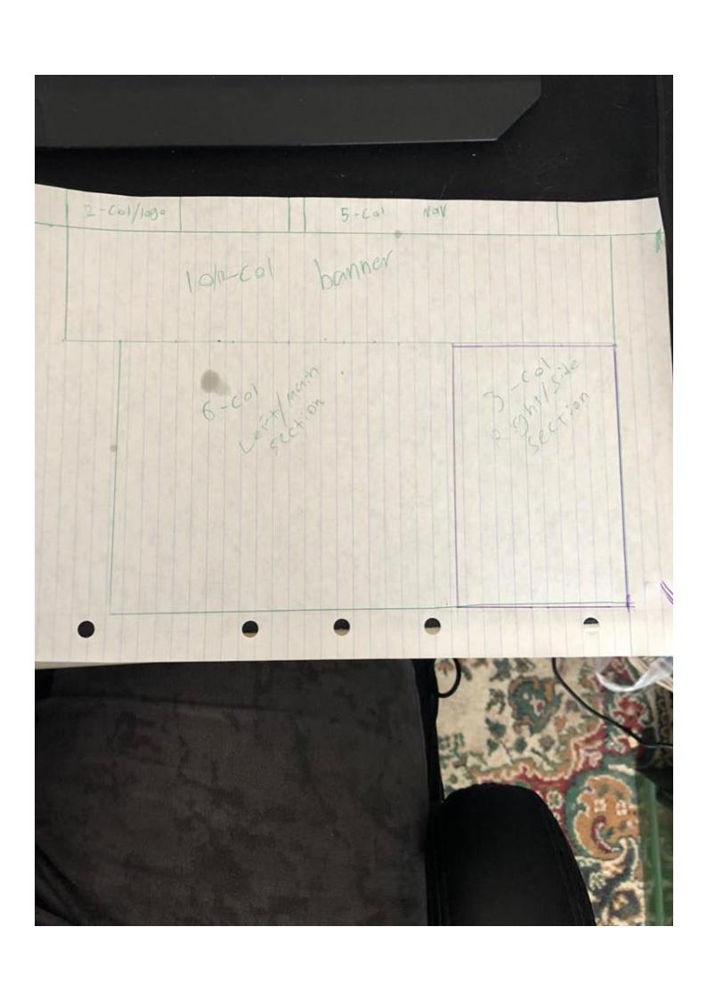
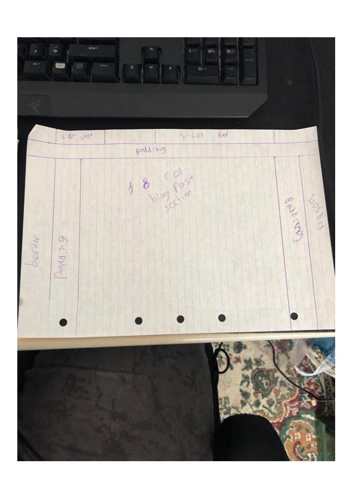
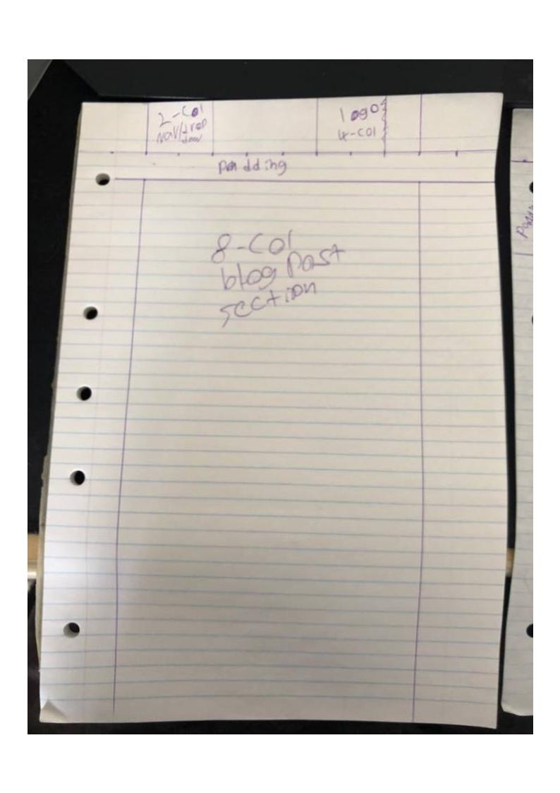
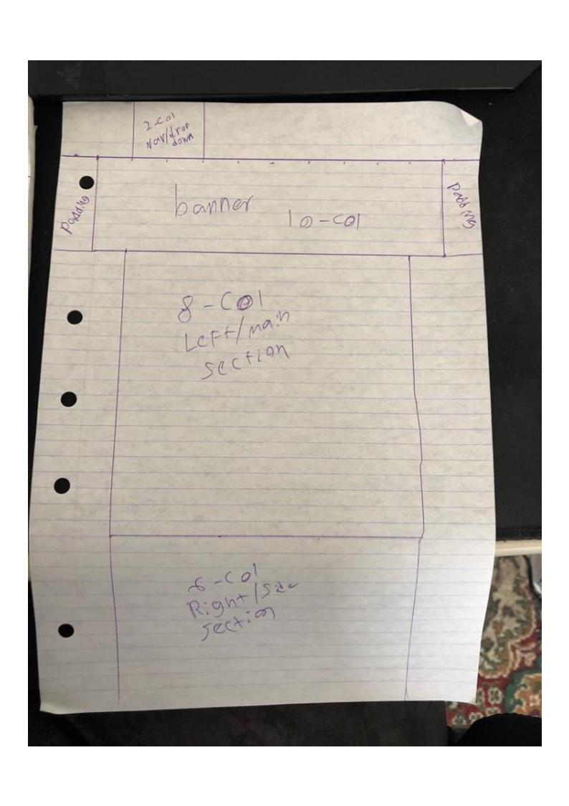

Technical Blog Part 3
- What is a responsive site and why responsiveness is important?
- What is mobile first design, and why is it important?
- What are frameworks, and what are their pros and cons.
- What is wireframe and why should we use it.
- What are aspects of your wireframes you found difficult to implement and why?
A responive site is a website which is designed to dynamically adjust itself view point based on the device that it is being viewed on. It is important that a site is responsive so that it can be viewed by anyone dispite the technology that they are accessing the internet from.
Mobile first design is when you start by designing a website with mobile devices in mind. This can be important for when a designer creates a design that looks amazing on a desktop but when trying to rework the design for mobile devices they run into problems. By designing a device for mobile first you eliminate this problem
A framework is pre defined structure that can be used to ensure that a website or websites conform to a standard. the biggest benefit for their use is for rapid deployment, however sometimes frameworks can make it difficult to perform smaller changes to a websites design.
Wireframe is a basic sketch of a design which contains little detail and no actual content. We should use wireframe in order to help us visualize our ideas while still in the pre design phase. Take a look at these wire frame designs.
   The most difficult part by far was making the website mobile responsive. This is simply down to a lack of experiance, however everyday is a learning experiance and I hope to master it.